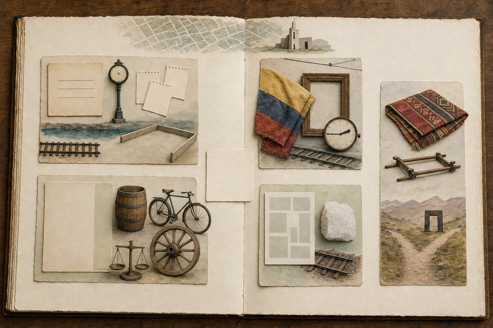

El camino de Lau

El atlas de Lau tenía cinco compartimentos.
En el primero había una tarjeta con tres líneas. En el segundo, una hoja con un margen bastante ancho para esconder veinticuatro años. Más allá esperaban una bandera doblada junto a un reloj, una página de poesía y una manta frente a un umbral oscuro.
Si juntábamos aquellas piezas sin cuidado, contaban una historia falsa. Había que abrirlas de una en una.
En el centro estaba Laura Gómez Vargas, Lau. Sus padres eran César Eugenio Humberto Gómez Gómez y María Lucía Vargas Hernández. Los dos se habían casado en San Ambrosio, una iglesia joven del norte de Bogotá, el 24 de abril de 1982. Esa puerta ya tiene su propio relato. Aquí basta verla un instante: una ciudad de calles y carreras, buses y trolebuses; dos personas que llegan desde historias distintas y forman la familia inmediata de Lau.
César Eugenio traía los caminos de sus padres, César Javier Diego Gómez Ramírez y María Leonor Gómez Naranjo. María Lucía traía los de Enrique Vargas Umaña y Magdalena Hernández Bernal.
Cuatro abuelos, sí. Pero detrás de ellos no aparecía una fila ordenada. Aparecía una casa con cinco puertas, cada una empeñada en cambiar de clima, de siglo y hasta de clase de aventura.
La tarjeta que perdió dos nombres
La primera puerta se abría en Marinilla, en 1891.
El niño tenía cinco días cuando quedó escrito con un nombre que parecía preparado para tres personas: Juan Bautista Eugenio Gómez. Sus padres eran Fulgencio Gómez y María de Jesús Gómez. Más tarde, otras páginas lo llamaron simplemente Eugenio. A veces los nombres crecen en las familias; este hizo lo contrario. Entró con tres palabras y salió con una.
Marinilla era entonces un pueblo de tapia, teja y calles que podían empezar en piedra y terminar en tierra. La plaza se inclinaba bajo la torre del reloj. Alrededor se repetía tanto el apellido Gómez que preguntar por "el señor Gómez" debía de ser una manera bastante eficaz de reunir a media cuadra.
Eugenio formó una familia con Teresa Ramírez. Entre sus hijos estuvo César Javier Diego, otro niño de tres nombres. Nació en Bello en diciembre de 1921 y fue bautizado tres días después. La ciudad estaba a punto de cambiar de tamaño y de sonido.
Fabricato ya existía como empresa desde 1920, pero su planta todavía no había abierto. Lo haría en 1923. César Javier nació en medio de esas dos fechas, cuando Bello tenía agua, rieles y actividad textil, pero no la fábrica terminada que después dominaría tantas imágenes de la ciudad. Vivir cerca de una industria no convierte a nadie en obrero, socio ni empresario. Por eso el atlas detiene las vías frente a un recinto vacío.
César Javier se casó con María Leonor. De ellos viene César Eugenio, el padre de Lau. La tarjeta de tres líneas queda en esta puerta para recordar algo sencillo: Juan, Bautista y Eugenio eran un solo niño, y aquel nombre que se acortó siguió sonando en la familia.
La hoja que guardó dos días
La segunda puerta olía a papel y llevaba a Bucaramanga.
María Leonor había nacido el 20 de enero de 1923. Quince días después, una página reunió alrededor de ella a sus padres, Humberto Gómez Naranjo y Nicanora Paulina Gómez Cornejo; a sus cuatro abuelos, Juan de Dios Gómez Rueda, María Antonia Naranjo, Juan de la Cruz Gómez y Trinidad Cornejo; y a dos padrinos.
Era mucha familia para una niña de quince días. El papel, por fortuna, sabía apretarse.
La ciudad que rodeaba aquella página también mezclaba tiempos distintos. Por sus calles pasaban animales de carga, bicicletas, buses y automóviles tempranos. Los aguadores y sus barriles seguían trabajando mientras avanzaban las tuberías. En la plaza se cruzaban canastos, sacos, balanzas y ruedas. Bucaramanga tenía motores, pero todavía necesitaba brazos y animales para muchas de sus tareas diarias.
Luego la hoja hizo una travesura. Saltó veinticuatro años sin contar qué ocurrió en medio.
En una nota al margen apareció el matrimonio de María Leonor con César Javier, celebrado el 1 de febrero de 1947 en Nuestra Señora del Carmen. Para entonces Bucaramanga tenía mercados cubiertos, fábricas, teatros y edificios más altos. La iglesia tampoco era la misma que había recibido su bautismo. Una sola página había conservado dos umbrales y dejado casi toda una juventud fuera del cuadro.
No vamos a llenarla con una casa, unos estudios o un oficio escogidos por imaginación. El margen ya tiene suficiente fuerza. Una niña entra por el centro de la hoja y una mujer reaparece al costado, veinticuatro años después.
La bandera y las dos y cuarenta y cinco
La tercera puerta regresaba a Bogotá, aunque a otra Bogotá.
El reloj marcaba las 2:45 de la tarde del 6 de mayo de 1940. En el salón del Concejo, una bandera cubría un retrato de Francisco de Paula Santander. Tulia Vargas Umaña la retiró antes de que empezara una sesión solemne.
Tulia era hermana de Enrique Vargas Umaña, el abuelo materno de Lau. Ambos eran hijos de Carlos E. Vargas Vargas y Tulia Umaña Suárez. La familia publicada reunía a cinco hermanos: Teresa, Enrique, Carlos, Tulia y Cecilia. Aquella tarde sólo sabemos que Tulia estuvo frente al cuadro. El atlas no sienta a Enrique entre el público por el simple hecho de compartir padres con ella.
Afuera corrían tranvías eléctricos con cobrador, cambio y paradas establecidas. Adentro, una mujer ocupaba durante unos segundos el centro de una ceremonia política. Había una contradicción difícil de ignorar: las colombianas aún no podían elegir mediante el voto a los hombres que sesionaban allí. Ese derecho llegaría catorce años después.
La acción de Tulia no nos dice qué pensaba. Tampoco la convierte en funcionaria o dirigente. Lo que hizo fue visible y concreto: apartó una tela a una hora precisa. El reloj del atlas puede quedarse quieto en ese minuto.
Enrique formó una familia con Magdalena Hernández Bernal. Ellos fueron los padres de María Lucía, la madre de Lau. La puerta de la bandera conduce hasta esa familia cercana, pero el retrato no arrastra consigo a todos los Santander ni convierte una ceremonia en una respuesta para cada generación.
El poema que llegó antes que el tren
La cuarta puerta tenía frío de sabana y polvo blanco de sal.
En Zipaquirá, la noche del 20 de julio de 1897, Leovigildo Hernández leyó fragmentos de un poema llamado Zora durante una reunión del Club Maceo. Era estudiante de jurisprudencia, la palabra que entonces se usaba para hablar de los estudios de Derecho. Enrique Monsalve leyó décimas en la misma velada. Años después, Luis Orjuela conservó la noticia y parte del poema en un libro sobre la ciudad.
No conocemos el salón ni el tono de voz de Leovigildo. Ni siquiera podemos entregarle un viaje cómodo desde Bogotá. El tren público que uniría a Zipaquirá con la capital empezó a funcionar en abril de 1898, varios meses después de la lectura. En el atlas, por eso, la vía se corta antes de llegar a la página.
Zipaquirá no esperaba el ferrocarril con los brazos cruzados. Tenía imprenta, sociedades literarias, aficionados al teatro y toda la actividad que crecía alrededor de la sal. Una noche de poesía podía ser también una forma de ocupar la ciudad.
Leovigildo se convirtió después en abogado y tuvo una vida pública. Llegó a presidir el Concejo de Bogotá y, décadas más tarde, fue cónsul colombiano en Boulogne-sur-Mer, frente al canal de la Mancha. Antes de los cargos y del puerto francés, sin embargo, estuvo el joven que abrió una página y leyó versos.
Con Magdalena Bernal formó el hogar del que nació Magdalena Hernández Bernal, abuela de Lau. Los papeles antiguos no se ponen de acuerdo sobre un segundo apellido de Leovigildo. El poema no arregla ese enredo. Hace algo mejor para esta historia: nos deja conocerlo antes de que su nombre aparezca rodeado de leyes y oficinas.
La manta frente al umbral
La quinta puerta estaba más lejos. Entre ella y las otras había una franja de papel sin líneas.
Allí esperaba una historia andina que la familia recibió y quiso conservar. No era una continuación comprobada del camino de Lau. Era una sala histórica con personajes propios.
Una versión antigua llama Coya a Francisca, una palabra vinculada al rango en el mundo inca. La historia también conserva el nombre de Huayna Cápac y una red de caminos que comunicaba Cuzco, Quito y muchos otros lugares. Esas vías servían al gobierno, a los ejércitos, a los mensajeros y al movimiento de bienes. No eran una carretera única ni el recorrido personal de Francisca dibujado de principio a fin.
Décadas después, Catalina, una mujer indígena mayor, recordó la entrada de los cristianos en Quito. Contó que Francisca, sus tres hermanas y otras personas huyeron. También habló de la captura del grupo en un lugar llamado Chaparra. El nombre sobrevivió; su punto exacto en un mapa, no.
Diego de Sandoval, capitán del nuevo poder armado, llevó a Francisca a su casa. Esa casa no entra en el relato como refugio ni como escenario de romance. El umbral oscuro del atlas dice lo necesario: después de la huida y la captura, Francisca perdió el control sobre el camino y sobre el lugar al que la llevaron.
La manta recuerda rango. Las andas vacías recuerdan una forma de presencia pública. El espacio blanco recuerda el límite más importante del libro: Francisca y Catalina merecen una historia completa, pero ninguna línea salta desde ellas hasta Lau.
El atlas vuelve al centro
Al cerrar la quinta puerta, los objetos seguían donde estaban. La tarjeta de tres nombres. La hoja con su margen. La bandera y el reloj. El poema detenido antes de la vía. La manta frente al umbral.
Todos cabían en el libro de Lau porque habían llegado a su historia de maneras distintas. Juan Bautista Eugenio, César Javier y María Leonor pertenecían al camino de César Eugenio. Enrique, Magdalena, Tulia y Leovigildo entraban por María Lucía. Francisca y Catalina ocupaban una sala histórica aparte, recibida por la familia sin una cadena que la pegara al presente.
Eso vuelve interesante el atlas. Compartir una mesa no significa compartir padres, y un apellido parecido puede conducir a otra puerta. Las cinco historias valen por sí mismas; obligarlas a formar una sola las haría más pobres.
Lau está en el centro porque es hija de César Eugenio y María Lucía, no porque haya recorrido todas esas ciudades ni porque cada personaje antiguo conduzca hasta ella.
El atlas puede quedarse abierto. La primera puerta ya está esperando.